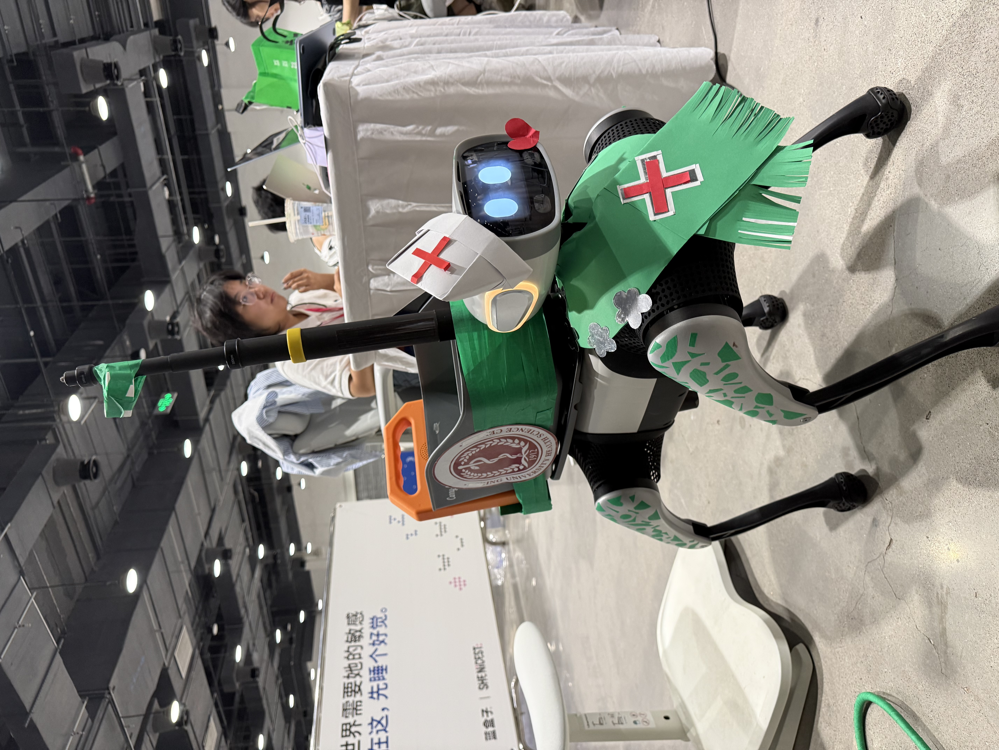
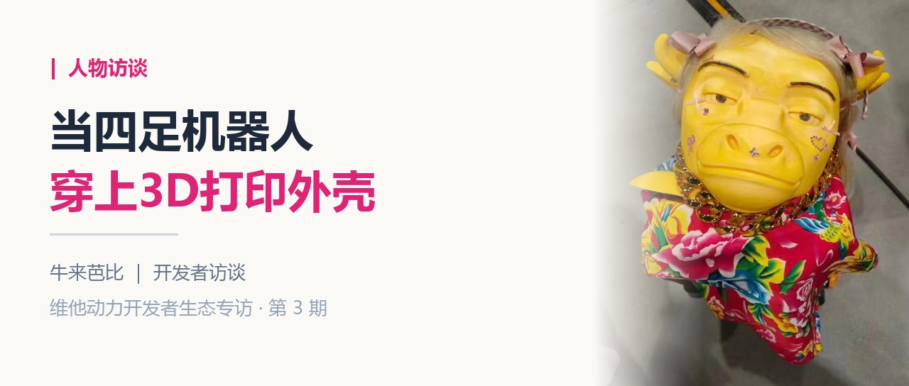
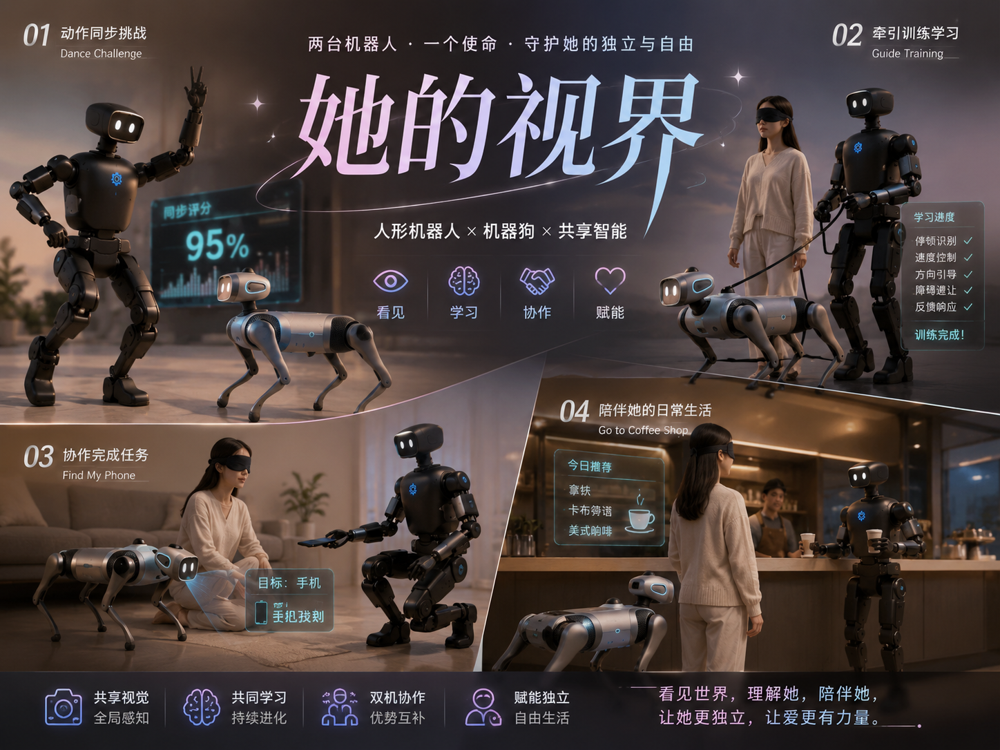

欢迎来到 VBOT EDU 具身智能开发教程
面向具身智能极客、机器人创客、高校科研团队，以及 AI Coding Agent（Cursor / Claude Code）的全景入门与实战指南。五个模块、十四课，从开箱到整机实战，固件基准 V1.6.0。
保姆级全流程覆盖：开箱接线、静态 IP 规划与 SSH 免密 → /vel_cmd 20Hz 安全运控 → 双大脑硬件边界与 Aorta(Zenoh) 46 核心话题、ROS 2 桥接 → DevContainer 与生产级 Python 骨架 → RCP DAG 动作流编排 → 激光点云切片、双目 H.265 硬解与 17 点骨骼姿态 → 语音唤醒词替换、VLM 视觉决策与设备端 18080 MCP 工具服务 → 5kg/12kg 负重边界、PiPER 六轴机械臂 CAN 接入、3D 打印外壳与外接算力板 → 6 大黑客松获奖案例深度复盘 → 四层隔离排障法与 flock 开机自启动守护收官。
通关 14 步
新手按序通关；做项目时可按需跳读——控制代码看 03，硬件改装看 04，排障看 05。
- 走进大头 EDU：产品全景与规格模块 01 · 快速开始
- 极速开箱与网络接入模块 01 · 快速开始
- Hello World：/vel_cmd 20Hz 运控模块 01 · 快速开始
- 双大脑硬件架构与物理边界模块 02 · 架构通信
- Aorta(Zenoh) 主干道与 ROS 2 桥接模块 02 · 架构通信
- 开发环境搭建与生产级骨架模块 02 · 架构通信
- 运动控制进阶与 RCP DAG模块 03 · 具身智能
- 激光雷达、双目视觉与骨骼感知模块 03 · 具身智能
- 多模态大模型与设备端 MCP模块 03 · 具身智能
- 硬件工程规格与核心约束模块 04 · 硬件改装
- 硬件改装、机械臂与外接算力板模块 04 · 硬件改装
- 黑客松标杆案例复盘（6 大项目）模块 04 · 硬件改装
- 四层隔离排障法与 15+ FAQ模块 05 · 诊断安全
- 安全守法规约与自启动防死锁模块 05 · 诊断安全
选择模块
快速开始
从认识平台、网络接入到 /vel_cmd 20Hz 运控，三课打通入门链路。
进入模块 → 02架构拓扑与通信机制
双脑硬件边界、Aorta(Zenoh) 46 话题与 ROS 2 桥接、生产级开发环境。
进入模块 → 03具身智能体开发
RCP 动作编排、多传感器数据流、多模态大模型与设备端 MCP。
进入模块 → 04硬件改装与黑客松蓝本
负载与算力约束、3D 打印/机械臂/RDK 改装、6 大真实案例复盘。
进入模块 → 05诊断与安全 FAQ
四层排障法与 15+ FAQ、安全守规与开机自启动防死锁。
进入模块 →硬件规格速查
数据来源：维他动力官方产品规格库 (vbot.cn/Detail) · 完整解读见 1.0 课。SSH 默认入口 vbot@192.168.126.2（普通用户，1.6 固件未开放 root/sudo）。
黑客松标杆案例

聆灵 LinBot · 医院陪诊
导医陪诊 + 智能药篮 + AED 急救响应，戴护士帽的"大头"。
伽伽狗 YogaGo · 瑜伽搭子
下犬式、直立动作演示，Sherpa 接管音频流自定义唤醒词。

牛来芭比 MooBie · 潮玩机甲
3D 打印外壳 + 大模型情绪计算五环节，路演高人气。

她的视界 · 多体协作
四足与人形机器人同台协作的现场实拍。
（含 PoopSense、小安搜救）→
阅读方式
- 新手按 01 → 02 → 03 → 04 → 05 顺序学习；每课页脚可上一课/下一课连续阅读
- 做项目时按需跳读：控制代码看 03，硬件改装看 04，排障看 05
- 配合
vbot-docs/AGENTS.md把教程喂给 AI Coding Agent 效果更佳
--execute 与 --confirm-motion 才下发物理运动；算力隔离：高负载推理强制 taskset -c 2-7，为底盘运控保留 CPU 0/1。
/vbot/sportmode_cmd 已废弃，请使用 /vel_cmd。运动测试请在开阔场地并保留物理急停。